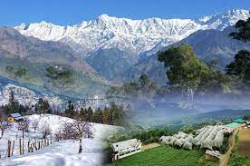

Country India State Himachal Pradesh District Shimla Named for Sri Shyamala Devi Government • Type Municipal Corporation • Body Shimla Municipal Corporation • Deputy Commissioner Aditya Negi, IAS • Municipal Commissioner Ashish Kohli • Mayor Surender Chauhan • State capital 35.34 km2 (13.64 sq mi) Elevation 2,276 m (7,467 ft) Population (2011) • State capital 169,578 • Rank 1 • Density 4,800/km2 (12,000/sq mi) • Metro 171,640 Languages • Official Hindi • Additional official Sanskrit, English Time zone UTC+5:30 (IST) PIN 171 001 Telephone code 91 177 XXX XXXX ISO 3166 code ISO 3166-2 UN/LOCODE IN SLV Climate Cwb Precipitation 1,577 mm (62 in) Avg. annual temperature 17 °C (63 °F) Avg. summer temperature 22 °C (72 °F) Avg. winter temperature 6–7 °C (43–45 °F) Website hpshimla.gov.in
Shimla (English: /ˈʃɪmlə/; Hindi: [ˈʃɪmla] ⓘ; also known as Simla, the official name until 1972)[10] is the capital and the largest city of the northern Indian state of Himachal Pradesh. In 1864, Shimla was declared as the summer capital of British India. After independence, the city became the capital of East Punjab and was later made the capital city of Himachal Pradesh. It is the principal commercial, cultural and educational centre of the state. Small hamlets were recorded before 1815 when British forces took control of the area. The climatic conditions attracted the British to establish the city in the dense forests of the Himalayas. As the summer capital, Shimla hosted many important political meetings including the Simla Deputation of 1906, the Simla Accord of 1914 and the Simla Conference of 1945. After independence, the state of Himachal Pradesh came into being in 1948 as a result of the integration of 28 princely states. Even after independence, the city remained an important political centre, hosting the Simla Agreement of 1972. After the reorganisation of the state of Himachal Pradesh, the existing Mahasu district was named Shimla.